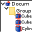
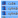
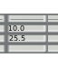
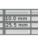
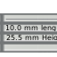
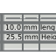

 Macro FCTreeView |
| Description |
|---|
| Cette macro affiche tous les objets du projet dans une liste avec des options de tri avancées. |
| Auteur |
| Mario52 |
| Liens |
| Recettes macros Comment installer une macro Comment ajouter une barre d'outils |
| Version |
| 00.07 |
| Date dernière modification |
| 2018-05-06 |
Description
Cette macro affiche tous les objets du projet dans une liste avec des options de tri avancées, rcherche par nom, label, type, majuscule ... une option permet de sauver dans un tableur les valeurs ou données au choix relatives à l'objet avec l'unité de grandeur sélectionnée, ou sous forme d'une liste des objets avec différenciation du volume (pour les objets ayants le même label et volumes différents)
Comment l'utiliser
Section Window
Le titre affiche les options, nombre et type d'objet(s) affiché
- O = Objects
- N = Name
- L = Label
- T = Total
- G = Group
- S = Single
- V = Visible
- H = Hidden
Si un objet est sélectionné: le placement de base, la rotation et le centre massique est affiché (si disponible!)
Icône utilisé pour le Nom de l'objet (la barre de défilement est colorée en bleu)
Icône utilisé pour le Label de l'objet (la barre de défilement est colorée en bleu clair)
(la barre de défilement est colorée en vert)
Icône utilisé pour visualiser si le statut de l'objet est Caché (cliquez avec la souris pour le rendre Visible) (la barre de défilement est colorée en rouge)
Icône utilisé si l'objet contient des objets (ou est un groupe)
Icône utilisé pour informer si l'objet est un groupe, (le nombre d'objet dans le groupe est affiché entre parenthèses) (la barre de défilement est colorée en rouge clair)
Icône utilisé pour un simple objet (pas un groupe)
Section Sort by :
Name Icône utilisé pour trier les objet par nom (flip/flop normal/reverse)
Label Icône utilisé pour lister les objets par label (flip/flop normal/reverse)
Visible Icône utilisé pour lister les données par Visible/caché (flip/flop normal/reverse)
Group Icône utilisé pour lister les objets par Groupe/Simple objet (flip/flop normal/reverse)
 Length Si cette case à cocher est activée le tri se fera sur la longueur du nom affiché de la fonction active (Name, Label ...)
Length Si cette case à cocher est activée le tri se fera sur la longueur du nom affiché de la fonction active (Name, Label ...)
Section Global
Split flip/flop Sépare le Nom de la liste
Split flip/flop Sépare le Nom et le Label de la liste
Expend flip/flop liste les données Fold/Expend
Expend flip/flop liste les données Expend/Fold
Visibility flip/flop normal/Visible
Reload recharge les objets du projet
Original retourne à l'organisation originale après une opération visibility/Hidden
All Visible visualise si l'objet est de status Visible
All Hidden visualise si l'objet est de statut Hidden
Section Search
Clear Efface la ligne de recherche
Les radioButton de recherche Search:
- ("NLwc") : Recherche par Name et Label Without sans respecter la Case sensitive
- ("Nsc") : Recherche par Name en respectant la Sensitive Case
- ("Lwc") : Recherche par Label Without sans respecter la Case sensitive
- ("NLsc") : Recherche par Name et Label en respectant la Sensitive Case
- ("NLwsc") : Recherche par Name et Label dans le mot en respectant la Sensitive Case (comme dans le panneau sélection de FreeCAD)
- (Nu) : Search by numeric value (radius, length, angle .....) voir la version section
 Select flip/flop pour sélectionner tous les objets affichés dans la fenêtre
Unselected flip/flop désélectionner tous les objets
S Sheet accès aux options du tableur (Spreadsheet)
The SpreadSheet options:
- Série de cases à cocher pour sélectionner la donnée à introduire dans le tableur
Select : Active toutes les cases à cocher
Select : désactive toutes les cases à cocher
- Value : seul la valeur est sauvée dans la cellule
- Ex : 10.00 
- Val Gr : la valeur et son unité sont sauvés dans une unique cellule
- Ex : 10.00 mm 
- Val Gr Ph : la valeur, l'unité et la donnée physique sont sauvées dans une seule cellule
- Ex : 10.00 mm Length 
- Split : si cette case à cocher est activée, les données valeur, unité et donnée physique sont enregistrées dans des cellules séparées
- Ex : 10.00 | mm | length 
- Combobox mm : sélectionnez l'unité désirée. La valeur est convertie dans l'unité sélectionnée. Les unités disponibles sont:
- km, hm, dam, m, dm, cm, mm, um, nm, pm, fm, in, lk, ft, yd, rd, ch, fur, mi, lea, nmi
- Combobox gram : sélectionnez l'unité de poids désirée. La valeur est convertie dans l'unité sélectionnée. Les unités disponibles sont:
- t, q, kg, hg, dag, g, dg, cg, mg, µg, ng, pg, fg, gr, dr, oz, oz t, lb, t lb, st, qtr, cwt, tonneau fr, ct
- Spinbox Densite : donnez la densité par dm3 du matériel utilisé (Défaut : 1.0000)
- Spinbox Round : donnez la valeur d'arrondi désirée (Default : 3)
- Combobox Name spreadSheet : Liste les tableurs (spreadsheet) dans la document
- Line edit Name spreadSheet : Affiche le tableur courant (spreadsheet) ou donnez un nom pour un nouveau tableur (spreadsheet)
Select sélectionne tous les checkBox
Unselect déselectionne tous les checkbox
Save sauves les données dans le Spreadsheet affiché. S'il n'y a aucun spreadsheet actif un spreadsheet nommé FCSpreadSheet est créé
Quit quitte la fenêtre options Spreadsheet
Icons
Les icônes doivent être copiés dans le même répertoire que la macro

{kind=link}
{kind=link}
{kind=link}
{kind=link}
{kind=link}
{kind=link}
{kind=link}
{kind=link}
{kind=link}
{kind=link}
{kind=link}
{kind=link}
{kind=link}
{kind=link}
{kind=link}
{kind=link}
{kind=link}
{kind=link}
{kind=link}
{kind=link}
{kind=link}
{kind=link}
{kind=link}
{kind=link}
{kind=link}
{kind=link}
{kind=link}
{kind=link}
{kind=link}
{kind=link}
{kind=link}
{kind=link}
{kind=link}
{kind=link}
{kind=link}
{kind=link}
{kind=link}
{kind=link}
{kind=link}
{kind=link}
{kind=link}
Script
Pour éviter de nombreuses instances, le clic sur le bouton ToolBar a un effet flip/flop (masquer/visible)
La macro s'accroche du côté droit de la fenêtre, pour avoir la macro dockée à gauche de l'écran, modifiez la valeur de la ligne 133 testing = 0 (ou changez la en maintenant la touche de la souris enfoncée sur le bord supérieur de la fenêtre et déplacez la)
The icon ToolBar 
Macro FCTreeView.FCMacro
A faire
Docked the macro
Version
ver 00.07 (06/05/2018) : modification de la procédure pour rechercher l'emplacement de la dernière cellule utilisée
ver 00.06 (13/12/2017) : correction d'un petit bug ligne del line num 1881 "del listeSortedBis[doublon][4:] # supprime le fond inutile" thanks renatorivo
ver 00.05 (27/11/2017) : ajout création d'un spreadsheet avec inclusion de beaucoup d'options
ver 00.04 (29-09-2017) : ajout recherche par valeur numerique (longueur, rayon....)
recherche par valeur :
global impost ; impost = ["Angle","Angle0","Angle1","Angle2","Angle3","ChamferSize","Circumradius","Columns","Degree",
"FilletRadius","FirstAngle","Growth","Height","LastAngle","Length","Length2","MajorRadius",
"MinorRadius","Pitch","Polygon","Radius","Radius1","Radius2","Radius3","Rows","Size","Width",
"X","X1","X2","Xmax","Xmin","X2max","X2min",
"Y","Y1","Y2","Ymax","Ymin","Y2max","Y2min",
"Z","Z1","Z2","Zmax","Zmin","Z2max","Z2min"]
ver 00.03 (23/09/2017) : ajout recherche par type d'objet
ver 00.02 (11/09/2017) : modifié pour docker et limiter les multiples instances avec bouton flip/flop (macro caché/visible)
ver 00.01 (08/09/2017) :